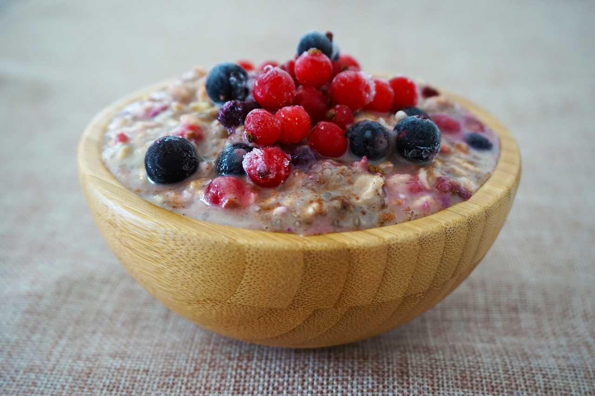

Overnight Oats

| 50 g | Haferflocken |
|---|---|
| 150 ml | Mandelmilch oder Kuhmilch |
| 1 TL | Chia-Samen |
| 1 Prise | Gewürz wie z. Bsp. Zimt |
| 100 g | Beeren als Topping |
Zubereitung
Haferflocken abwiegen und mit Milch, Chiasamen und Gewürzen in ein Glas geben und vermischen. Glas über Nacht in den Kühlschrank stellen.Am nächsten Morgen Obst zurechtschneiden und in das Glas geben. Overnight Oats direkt Verzehren oder einfach im Glas verschließen und für unterwegs mitnehmen.
Rezept erstellt von